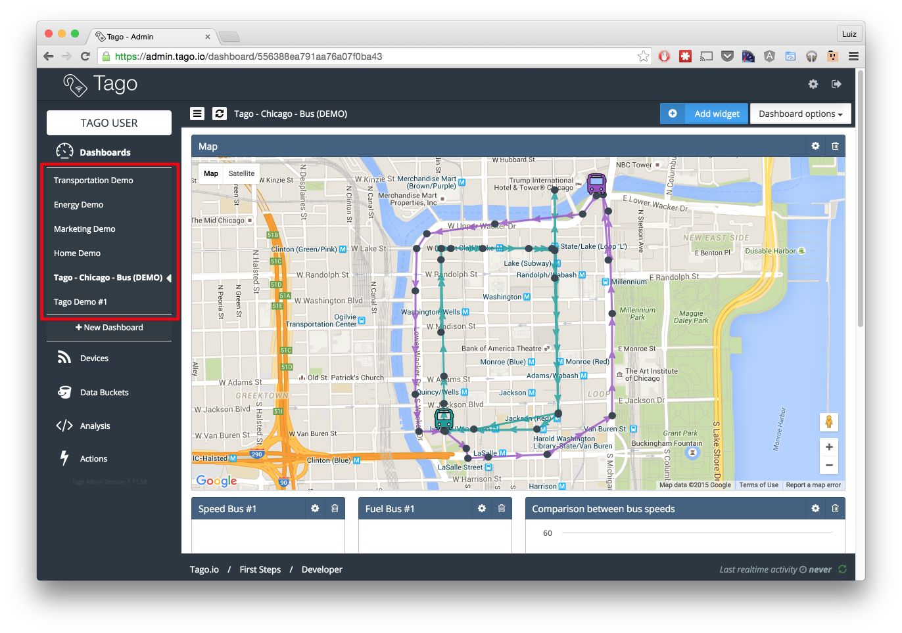

Dashboard¶
A dashboard is where you place your widgets to visualize and interact with data, in realtime. All of your dashboards are listed on the sidebar of Tago.
You can organize them in a way that best fit your needs by moving and resizing your widgets.
Building dashboards¶
To create a new dashboard, just click the button below your dashboards list + New Dashboard, give a name to your new dashboard and click on Create.
Widgets¶
Dashboards are made of widgets. Tago provides a variety of widgets to handle your data in realtime. From simple dials to tables, maps and even forms that you can use to create new data.

Data Sources¶
The widgets that handles data (not all of them do it), needs a data source. The data source of your widgets are the variables created when you send data from your device to Tago’s API. So you have to pick which variables, from which device & bucket, to use as data in your widgets.
You’ll notice that many widgets uses your variables name in order to identify, for example, a line of a chart or a device in a map. And we know that sometimes your variable name isn’t appropriate to the end user. Because of that, every variable selected might have a label. A label is simply an alias that will be used by the widget whenever it needs to display your variable name. To add an alias to a variable, just click on top of it, and you’ll see a little balloon with the alias field.
Along with the alias field, you’ll see that you can change the bucket and/or the device of this variable. Well, sometimes our needs changes or a new device is now responsible for sending an specific data. Whatever the reason, you’re covered. You can change your variable settings if you need.

Configuration¶
Besides the data sources, every kind of widget has its own particular configurations in regard how to display the data. So when creating a widget, you’re going to find basic options - generally these are critical to the algorithm that builds your widget - and advanced options, which allows you to give your personal touch to each widget and also provides advanced features you might need. Two advanced features included in every widget are:
- Help text
- Hide variables name
The help text allows you to add a little help text that will be placed on the top-right corner of your widget, under a interrogation sign.

The second one gives you tha ability of hiding the variables name in the widget. It can be useful if you don’t want to show names at all in your widgets. We recommend you to add a descriptive title in such cases though.
You will notice that some widgets are complex than others. While a dial only need a miminum and maximum value, a multiple axis chart needs a little bit more configuration related to each one of the variables, in this particular case you’ll have to define the type (bar, line, etc) of each data source. This kind of customization, while it takes a little more time to get done, offers you a lot of flexibility.

Time¶
When creating your widgets, you are goint to see that some of them works only showing the latest value added of your variable and keeps it updated through realtime updates, others can exhibit a range of time while keeping it updated through realtime updates, and others just show some data in a particular period of time. When more than one of the previous options is available in a widget, its up to you to choose the best one that fits your needs. And don’t worry, because you can choose in which time zone that time will be related to.

Dial¶
Display¶
Chart¶
Map¶
Table¶
Pie¶
Input¶
Gauge¶
Note¶
Sending dashboards¶
Sometimes a dashboard can become an entire feature that you want to share. Now there are two ways of sending a dashboard to someone:
Copy¶
When you send a copy of your dashboard, others will only receive the dashboard without having any access to your data. They are able to edit the dashboard and its widgets without impacting yours.
To copy a dashboard to someone, you must access that dashboard and then, trough the Dashboard options menu, click in Share.
To complete the action, fill the email of whom you want to copy your dashboard to, optionally write him/her a message and then describe the type of devices that are needed for that dashboard. (we automatically gather the devices used by your dashboard and show you just what you need to describe)